Getting Started
This guide will walk you through the basics of using FormulaCompiler.jl for efficient model matrix evaluation.
Installation
FormulaCompiler.jl is currently available from GitHub:
using Pkg
Pkg.add(url="https://github.com/emfeltham/FormulaCompiler.jl")Once installed, you can load the package:
Workflow Overview
Here's how FormulaCompiler.jl works from start to finish:

using FormulaCompilerBasic Workflow
The typical workflow with FormulaCompiler.jl involves three steps:
- Fit your model using standard Julia statistical packages
- Compile the formula for optimized evaluation
- Evaluate rows with zero allocations
Let's walk through a complete example:
Step 1: Fit Your Model
using FormulaCompiler, GLM, DataFrames, Tables, CategoricalArrays
# Create some sample data
df = DataFrame(
y = randn(1000),
x = randn(1000),
z = abs.(randn(1000)) .+ 0.1,
group = categorical(rand(["A", "B", "C"], 1000)),
treatment = rand(Bool, 1000)
)
# Fit a model using GLM.jl (or any compatible package)
model = lm(@formula(y ~ x * group + log(z) + treatment), df)Important: FormulaCompiler requires all categorical variables to use
CategoricalArrays.jl. String variables in models are not supported. Always convert string columns to categorical format usingcategorical(column)before model fitting.
Step 2: Compile the Formula
Convert your data to column-table format for best performance:
data = Tables.columntable(df)Compile the formula:
compiled = compile_formula(model, data)The compiled formula contains all the information needed for zero-allocation evaluation.
Step 3: Evaluate Rows
Pre-allocate an output vector:
row_vec = Vector{Float64}(undef, length(compiled))Now evaluate any row with zero allocations:
compiled(row_vec, data, 1) # Evaluate row 1
compiled(row_vec, data, 100) # Evaluate row 100
compiled(row_vec, data, 500) # Evaluate row 500Each call achieves zero allocations with good performance.
Alternative Interfaces
FormulaCompiler.jl provides several interfaces for different use cases:
Convenient Interface (Allocating)
For quick prototyping or when allocation performance isn't critical:
# Single row evaluation
row_values = modelrow(model, data, 1)
# Multiple rows
row_indices = [1, 10, 50, 100]
matrix = modelrow(model, data, row_indices)Object-Based Interface
Create a reusable evaluator object:
evaluator = ModelRowEvaluator(model, df)
# Zero-allocation evaluation
result = evaluator(1) # Returns new vector
evaluator(row_vec, 1) # In-place evaluationBatch Evaluation
Evaluate multiple rows at once:
# Pre-allocate matrix
matrix = Matrix{Float64}(undef, 10, length(compiled))
# Evaluate rows 1-10 in batch
for i in 1:10
compiled(view(matrix, i, :), data, i)
endHow Compilation Works
FormulaCompiler.jl uses a unified compilation pipeline based on position mapping:
- Decompose the formula into primitive operations (load, constant, unary, binary, contrast, copy)
- Allocate scratch and output positions for all intermediate and final values
- Embed those positions as compile-time type parameters
- Return a
UnifiedCompiledobject that evaluates rows with zero allocations
Performance Verification
You can verify zero-allocation performance using BenchmarkTools.jl:
using BenchmarkTools
# Benchmark the zero-allocation interface
@benchmark $compiled($row_vec, $data, 1)You should see zero allocations and good evaluation performance. Absolute times vary by hardware and Julia version; focus on allocation behavior and relative trends. See the Benchmark Protocol for reproduction details:
BenchmarkTools.Trial: Many samples with many evaluations.
Memory estimate: 0 bytes, allocs estimate: 0.Compare this to the traditional approach:
@benchmark modelmatrix($model)[1, :]Troubleshooting
Common Issues and Solutions
Compilation Errors
Problem: MethodError during compile_formula
# Error: MethodError: no method matching compile_formula(::SomeUnsupportedModel, ::NamedTuple)Solution: Ensure you're using a supported model type (GLM, MixedModels) or check package compatibility.
Problem: BoundsError or dimension mismatches
# Error: BoundsError: attempt to access 500-element Vector at index [1001]Solution: Verify that your data contains the expected number of rows and that row_idx is within bounds.
Performance Issues
Problem: Non-zero allocations detected
# @benchmark shows non-zero memory allocationsSolutions:
- Use
Tables.columntable(df)instead of DataFrame directly - Ensure output vector is pre-allocated with correct size
- Check for type instabilities in your data (mixed types in columns)
- Verify all categorical variables use
CategoricalArrays.jl
Problem: Slower than expected performance
# Evaluation takes longer than anticipatedSolutions:
- Let compilation warm up with a few calls before benchmarking
- Use the caching interface (
modelrow!with cache=true) for repeated evaluations - Check for complex formulas that may benefit from simplification
- Ensure data is in optimal format (
Tables.columntable)
Data Format Issues
Problem: String variables in models
# Error: FormulaCompiler does not support raw string variables
df.category = ["A", "B", "C", "A", "B"] # String vector
model = lm(@formula(y ~ x + category), df) # Will cause issuesSolution: Convert all categorical data to CategoricalArrays.jl format before model fitting:
# Required: Convert strings to categorical
df.category = categorical(df.category)
model = lm(@formula(y ~ x + category), df) # Now works correctlyProblem: Categorical contrasts or unexpected behavior
# Error with categorical contrasts or unexpected contrast behaviorSolutions:
- Ensure all categorical variables use
CategoricalArrays.jl:categorical(column) - Verify factor levels are consistent between training and evaluation data
- Check contrast specifications in model fitting:
contrasts = Dict(:var => EffectsCoding())
Problem: Missing values causing errors
# Error: missing values not supportedSolution: Remove or impute missing values before model fitting and compilation.
Memory Issues
Problem: Large memory usage despite zero-allocation claims
# High memory usage in applicationSolutions:
- Use direct data modification with
merge()instead of creating full data copies - Reuse compiled formulas rather than recompiling
- Clear model cache if accumulating many different compilations:
clear_model_cache!()
Performance Validation
Verify your setup achieves expected performance:
using BenchmarkTools
# Check zero allocations
result = @benchmark $compiled($row_vec, $data, 1)
@assert result.memory == 0 "Expected zero allocations, got $(result.memory) bytes"
# Check cache effectiveness
@time modelrow!(row_vec, model, data, 1; cache=true) # First call
@time modelrow!(row_vec, model, data, 2; cache=true) # Should be much fasterGetting Help
If you encounter issues not covered here:
- Check the API Reference for detailed function documentation
- Review Examples for similar use cases
- Examine Advanced Features for complex scenarios
- Consult Performance Tips for optimization guidance
Interface Selection Guide
Choose the right interface for your needs:
Use compiled(output, data, row_idx) when:
- Maximum performance is critical
- You're in tight computational loops
- You can manage pre-allocation
- Zero allocations are required
Use modelrow!(output, compiled, data, row_idx) when:
- You want explicit control over compilation
- You need the same compiled formula across different data
- Memory management is important
- You prefer functional over object-oriented style
Use modelrow(model, data, row_idx) when:
- Convenience outweighs performance
- You're prototyping or exploring
- Allocation overhead is acceptable
- You prefer simple, direct interfaces
Use ModelRowEvaluator(model, data) when:
- You prefer object-oriented interfaces
- The same model and data are used repeatedly
- You need both allocating and non-allocating evaluation
- You want encapsulated state management
What's Next?
Now that you understand the basics, explore advanced topics:
Immediate Next Steps
- Basic Usage Guide - Detailed interface documentation
- Scenario Analysis - Counterfactual analysis and variable overrides
- Performance Tips - Optimization strategies
Advanced Applications
- Examples - Real-world statistical computing patterns
- GLM Integration - Linear and generalized linear model workflows
- MixedModels Integration - Mixed-effects model support
Reference Documentation
- API Reference - Complete function documentation with examples
- Architecture - Implementation details and design principles
- Mathematical Foundation - Theoretical background and computational theory